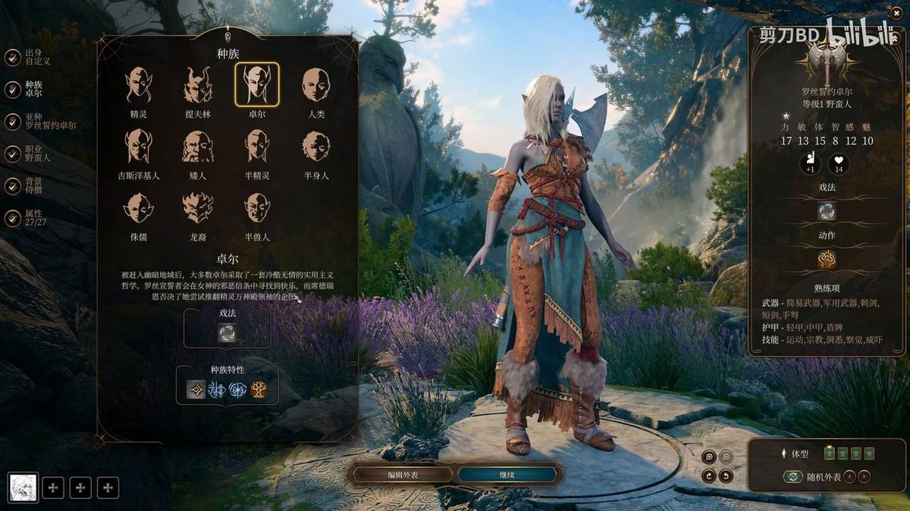
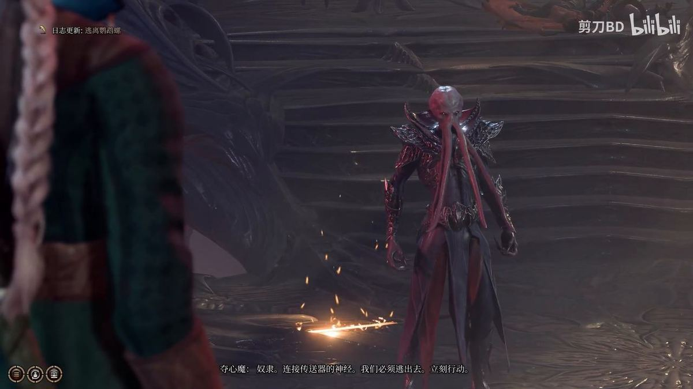
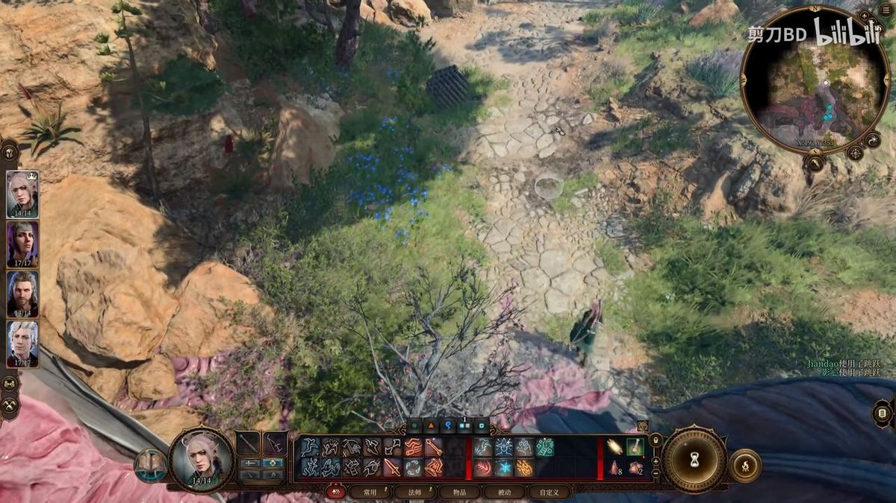
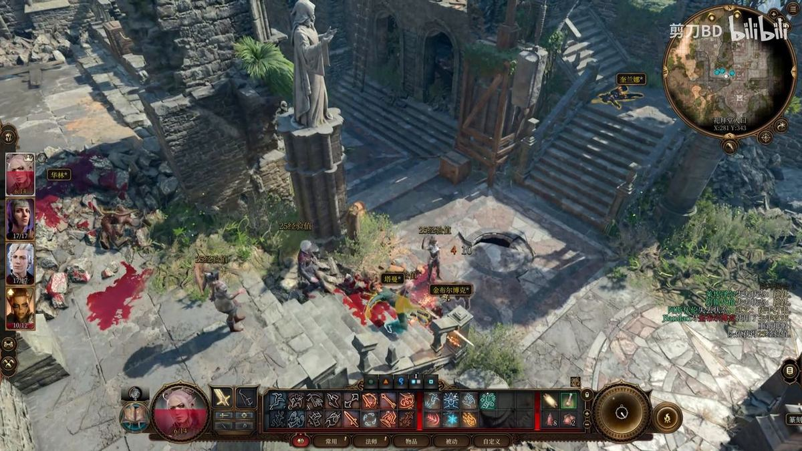
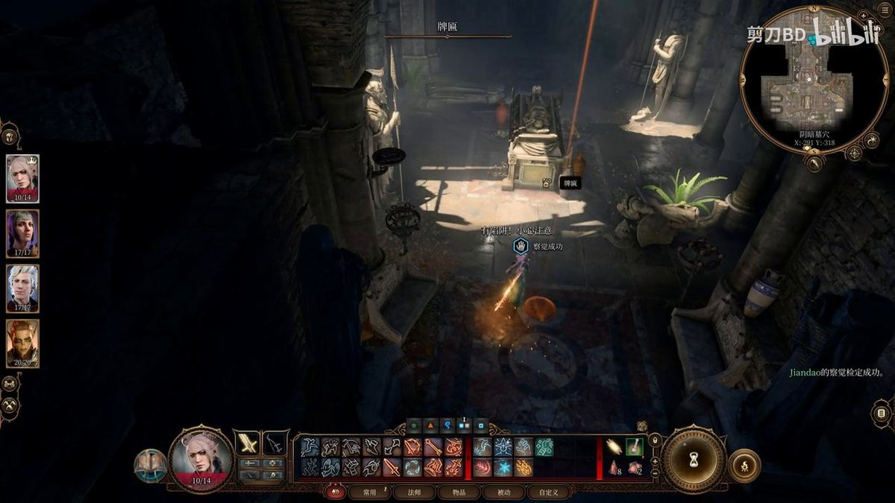
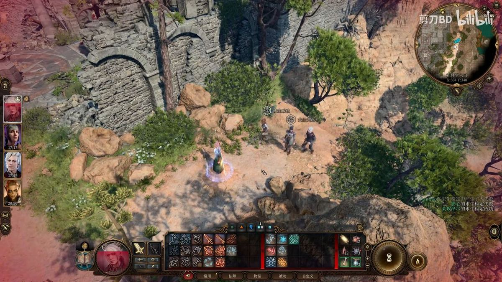

01
序章 · 海滩与废墟墓穴
路线概要
从夺心魔的寄生手术中逃脱，途经鹦鹉螺号残骸抵达海滩据点，沿途救出影心、盖尔、阿斯代伦三位同伴，并在礼拜堂废墟与阴暗墓穴中取得本篇的关键装备永燃之刃。本集是全流程分支最多的一段：是否处死强盗、是否救莱埃泽尔、是否放过章鱼哥都会影响后续好感与成就。
开卡与序章背景
00:00 – 05:1200:00 · 背景
开场动画中，夺心魔在飞船上以灵能剖开奴隶颅骨植入蝌蚪状寄生虫。玩家所处视角同为囚犯，注定在植入手术后被弃于地狱。
00:00 · 背景
夺心魔（Mind Flayer，俗称灵吸怪）以智慧生物的大脑为食，靠心灵异能役使奴隶，是被吉斯洋基人击溃后残存至今的古老威胁。
01:42 · 抉择
创建角色时建议自定义而非起源角色：捏人选项与种族选择更自由，且可加入的同伴数量更多。
01:42 · 要点
法术方面，戏法不消耗法术位可无限施放；优先习得强化跳跃（攀越处处），羽落术与魔法飞弹各学一级兼顾跑图与战斗。
02:48 · 要点
背景推荐「骗子」，其欺瞒与巧手特长可在对话与检定中获得额外加成。

02:48 · 要点
属性建议主加力量与敏捷；智力点到 12 可预置 2 个法术位，点到 14 可预置 3 个。
03:46 · 背景
鹦鹉螺（Nautiloid）是夺心魔的跨位面旗舰，外形仿照海中的鹦鹉螺。它曾劫掠艾尔托瑞尔，将市民掳上飞船充当奴隶。
03:46 · 战斗
一队红龙战队（Flame of the Absolute）从其他位面追来，撞破船体并喷火攻击，迫使夺心魔连续传送跳跃摆脱。
03:46 · 要点
飞船最终坠毁，队伍被抛上.material 物质位面的海岸，正式进入第一章。
鹦鹉螺：夺心魔贮囊与噬脑怪
00:00 – 05:1205:17 · 要点
队伍被释放出贮囊。前方水池即「育儿室」，是夺心魔培育寄生虫的场所。
05:17 · 避坑
切勿触碰育儿室内的贮囊。其外壳在寄生程序结束后已极度脆弱，接触会直接引爆。
05:17 · 要点
贮囊不止一个，已有幼体破壳逃出。跳上平台可看到符文石板，记载鹦鹉螺能凭灵能在各位面之间直接穿行。
05:17 · 装备
平台上有软箱，内有金钱；若无羽落术，跳下会损失少量生命。
05:17 · 装备
搜刮死去的夺心魔有概率获得速度之油（Sussur Oil）：饮用后 3 回合内移动距离翻倍并获得额外动作点，近战角色收益极高。
05:17 · 要点
在恢复站回复状态后继续前进，地面可见地精尸体。
06:13 · 背景
舱内散落的文本记录了夺心魔对地精习性的研究，可看出其活动范围之广正是依托鹦鹉螺的跨位面航行能力。
06:13 · 要点
乘电梯上行，手术台上有一具昏迷躯体。
06:13 · 抉择
该躯体以意念发声，自称「从大脑中降生」。拔除其大脑需通过感知豁免检定，难度较高——务必提前存档。
06:13 · 抉择
拔出大脑后选择放过它。脑体落地即化为噬脑怪（Intellect Devourer），自称「我们」。
06:13 · 要点
噬脑怪指出：留在地狱无法存活，必须前往魔舵（Cacophony）夺下飞船的控制权。
07:06 · 要点
往前抵达飞船裂口，红龙已追至，鹦鹉螺腹背受敌。
07:06 · 要点
先一步逃出贮囊的吉斯洋基女性在此拦路——莱埃泽尔。她察觉众人同样身负寄生虫。
07:06 · 避坑
若不设法脱离寄生，数日内将异化为夺心魔。首战不可避免，且必须以击败地狱小魔鬼为目标，不能在此耗尽资源。
07:06 · 战斗
首战是教学战。底部小圆绿点代表动作点数，黄色三角为附赠点数；一轮行动结束后由下一先攻梯队接续。
07:06 · 要点
战斗结束后搜刮死去的奴隶尸体，随即向下一房间推进。
08:01 · 抉择
面对与两名奴隶相连的装置：选中间会直接开战；选右侧则奴隶死亡且无经验。最优解是直接击杀，既安全又照常获取经验。
08:01 · 装备
拾取紫色的鹦鹉螺储液罐，是上等的火药材料。
08:01 · 要点
舱内呼救者可通过奥秘检定直接解谜；未通过则需寻找按钮或拉杆开关。
08:01 · 装备
务必搜刮尸体上的诡异符文——它是贮囊控制器的核心组件。
08:01 · 避坑
将符文放入控制台插槽会触发注入指令，被控制的奴隶当场蜕变为夺心魔。莱埃泽尔对此极为反感。

08:56 · 要点
打开贮囊救出影心。她刚要道谢即以心灵感应示警：附近还有一名吉斯人，此族与其余同伴皆不睦。
08:56 · 装备
影心会私下带走一枚正多面体小物件（戏法骰）。
08:56 · 要点
魔舵内夺心魔正与地狱魔鬼交战，可趁乱夺取控制权。
08:56 · 战斗
指挥官扎尔克（Commander Zalrik）登场。此战目标是净化夺心魔并取得传说武器永燃之刃（Crystal Shard），达成细节成就。
10:20 · 装备
从扎尔克处获得传说武器永燃之刃，需装备在主控角色身上才能发挥效力。
10:20 · 要点
过关后取得竖琴手地图，标出月出之塔与周边林地位置，为第二章埋下伏笔。
海滩：三位同伴与据点
00:00 – 05:1214:13 · 要点
抵达海滩，唤醒影心。她只记得坠机，其余一概不知，并断定莱埃泽尔不可信——正好需要队友同行。
14:13 · 要点
影心对曾救助她一事心存感激，主动释放好感。
14:13 · 要点
沿海岸线北行会激活传送点；两只噬脑怪见人即逃，不必追击。
15:06 · 要点
法阵中有只手可交互。此人自称深水城旅者盖尔，可先掌掴再以力量检定拖出（神导术可提高成功率）。
15:06 · 要点
盖尔以魔网语言描述了坠落时目击的一道光，与队伍失散于恶魔领。他随后加入队伍。
16:06 · 抉择
鹦鹉螺残骸旁有一名濒死的夺心魔——正是绑架众人的元凶。可直接走过，也可补刀结案并踩踏取经验。
16:06 · 装备
搜刮该夺心魔必得速度之油（Sussur Oil），持续 3 回合：移动距离与动作点数双倍。
16:57 · 要点
阿斯代伦现身求助，条件是助其杀死体内寄生虫。前两次对话选项均不影响结果，他最终会制服并推倒队伍。
16:57 · 背景
通过心灵感应可见阿斯代伦在幽暗街巷徘徊的过往——他同样是被掳至博德之门的受害者。
16:57 · 抉择
可在此邀请阿斯代伦入队；若拒绝，之后仍可返回此处招募。
17:47 · 要点
驯服一头野猪可提升好感，随后沿海岸继续推进。
17:47 · 装备
移开磨损巨石后可见补给箱，内含速度之油与竖琴手手册。
18:38 · 背景
手册记载塞伦涅信徒的渎神行径。塞伦涅为月之女神，信徒坚信月光能驱散黑暗中的邪恶。
18:38 · 装备
另有竖琴手地图，标注月出之塔与林地隐藏点，打开地图即在图上生成新标记。
19:27 · 要点
返回鹦鹉螺搜刮尸体后，建议先经山崖传送点升级。职业点右上角增加，序章之后多数角色都要洗点转职。

20:17 · 要点
前方进入敌人视野时按 C 潜行，先手攻击可使对方受惊，此时其先攻头像全灰、首回合无法行动。
20:17 · 装备
在首个路口左拐可拾取铲子，有了铲子才能挖掘土堆寻宝。切勿偏离主路，易触发无关剧情。
21:11 · 要点
折返后连续两次左转，莱埃泽尔被倒吊受刑。行刑者为提夫林人——角似魔鬼、通体赤红，与地狱生物颇为相似。
21:11 · 避坑
若打算走善良路线并争取「无人掉队」成就，切勿杀死任何提夫林人。过关定即可驱散他们。
21:11 · 抉择
放出莱埃泽尔有三种方式：她主动求情可额外获得好感；也可选择让她先返回营地。远程攻击击中下方的木桶即可救下她。

21:11 · 要点
莱埃泽尔表示族人掌握净化之法，目标是寻找吉斯洋基养育间。答应后即可招募她入队。
22:01 · 背景
影心对此颇有微词，自称半精灵；莱埃泽尔则嘲讽其精灵身份——两人的敌意是后续队伍管理的隐患。
22:01 · 要点
莱埃泽尔建议前往林地寻找名为「苏洛」的人打听养育间位置。
22:01 · 装备
整备装备：永燃之刃装备给主控角色，原剑交还莱埃泽尔。
废墟墓穴：强盗、阴险与永燃之刃
00:00 – 05:1222:55 · 避坑
进入建筑前为全队加持强化跳跃，并提前存档——本段战斗密集且有连续多场。
22:55 · 背景
此处是古代礼拜堂废墟，常被盗墓贼觊觎。这群强盗误以为来客要抢他们的陵寝。
22:55 · 抉择
谈判勿选无检定项（会直接开战）；以战士口才可不检定驱散，或走检定路线同样可拿经验。
23:50 · 战斗
战斗技巧：待一名强盗转身背对时潜行，按住 Shift 加空格进入回合制射箭。隐蔽状态下命中必定受惊，收益是同时拿到嘴炮经验与战斗经验，并能完整搜刮尸体。
23:50 · 避坑
留意摇摇欲坠的雕像。地面被砸时会连同队伍一并砸落。
23:50 · 抉择
门内另有强盗，因不知同伴已死，随便选个通过检定的选项即可骗其开门。

24:45 · 要点
击倒后正式探索废墟。牌匾刻着难以辨读的古代文字，箱子和补给包记得全部拾取。
24:45 · 要点
把莱埃泽尔升到 2 级战士。二级习得「动作如潮」，一回合内可多获得 1 点动作点数。
25:35 · 战斗
此战强盗集中于一室，无法逐个偷袭。地面有油桶，火焰箭引爆后敌方损失惨重，随后再强攻就相当轻松。
25:35 · 战斗
同伴可主动走到敌人脸前，为阿斯代伦制造偷袭条件。核心思路始终是受惊 + 偷袭，以降低难度、保障存活。
25:35 · 背景
小房间内有终息之书，记载死者的姓名、死因与临终之语，读罢短休回复状态。
25:35 · 要点
礼拜记录中全是讚告。继续向前扳动控制杆，可取得一本无人认领的书籍。

26:30 · 装备
牢房区域救出侏儒守卫，循其指引前往礼拜堂深处，途中可取得竖琴手笔记。
26:30 · 装备
击败守卫后开箱，取得重要道具——完成本集装备闭环。
27:20 · 要点
与残存的守墓人对话，得知更多关于远古时代的线索，并获得迷失之声护符。
27:20 · 避坑
本集需警惕的雷点有三：误触贮囊引发爆炸、强开贮囊导致奴隶蜕变、礼拜堂雕像被砸时未及时撤离。